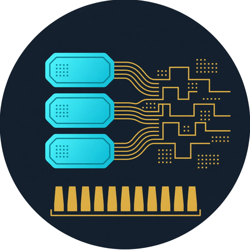

pcieshark =
Wireshark for PCIe TLPs
Open QEMU pci_cfg_* logs and CSV captures. Match requests to completions. Live analyzer on a golden fabric.

Release 0.1.0 · AGPL-3.0-only · Verilator 5.032+
PCIe Transaction Layer Packets to cycle-accurate HDL. Replay pcieshark and QEMU traces into Verilator, watch teaching AXIS beats on a wave, and gate Match in C and SystemVerilog.
Two tools, one stack. Capture and review in software; prove the same TLPs in simulation.
Open QEMU pci_cfg_* logs and CSV captures. Match requests to completions. Live analyzer on a golden fabric.
Same traces enter DPI-C, become AXIS beats, drive a header parser and Match tracker, and must score mis=0.
Built for early PCIe bring-up when you already have traces from QEMU or pcieshark and need an HDL view before a live analyzer or VIP stack.
QEMU pci_cfg_read/write logs and pcieshark CSV. One file, no rebuild when you change TRACE=.
Four 32-bit beats per TLP: type, IDs, address, payload. tstart…tlast like an L2 frame on AXI-Stream.
tlp_header_parser recovers CfgRd/CfgWr/Cpl fields and the QEMU one-line complete hint.
Same idea as pcieshark Match: one-line cfg → complete; optional MemRd↔Cpl pairing slots.
DPI tallies and SystemVerilog counters must agree. make gate fails unless mis=0.
GTKWave dump with L2AxisBr-style reading: one clock, both pins high, frame span.
Observers sit beside the stream — parse and Match do not sit in a FIFO after a NIC.
tlp_reader.c packs beatstdata · tvalid · treadyhdr_validmis=032-bit teaching bus. Not a full PCIe PHY — enough structure to see a TLP the way you see an Ethernet frame on AXIS.
| Beat | Contents | Notes |
|---|---|---|
| 0 · tstart | type, dir, tag, match_hint | CfgRd=0x04 · CfgWr=0x05 · Cpl=0x0A |
| 1 | requester_id, completer_id | BDF packed as RID |
| 2 | addr[31:0] | Config offset or memory address |
| 3 · tlast | payload DWORD | Returned or written config data |
match_hint=1 means QEMU logged the access and its DWORD on one line — pcieshark Match = complete.
Linux, Verilator 5.032+, optional GTKWave. Full recipes: run book.
Install and gate the default sample
sudo apt install build-essential verilator gtkwave git clone https://github.com/khademullah/TLP2HDL.git cd TLP2HDL make gate make MAX_TLPS=8 && make wave
Full pcieshark Zephyr golden capture
make TRACE=/path/to/zephyr_ai_topology_trace.log MAX_TLPS=200
Default sample: 26 TLPs from the golden fabric slice — CfgRd=25, CfgWr=1, complete=26. C and HDL counts must match.
Same discipline as L2AxisBr. A beat is not “valid alone.”
tdata, tvalid, tready, tstart, tlasttstart through tlast (four beats)hdr_valid for decoded CfgRd / CfgWr| Format | Example |
|---|---|
| QEMU log | pci_cfg_read nvme 03:00.0 @0x0 -> 0x101b36 |
| CSV | timestamp,direction,type,requester,completer,tag,length,addr,payload |
| Version | Focus |
|---|---|
| 0.1 | QEMU/CSV replay, AXIS-TLP, Match gate, VCD, site |
| 0.2 | CSV dump round-trip, MemRd↔Cpl stress, type filter |
| 0.3 | Golden fabric HDL + pcieshark Wave pane link |